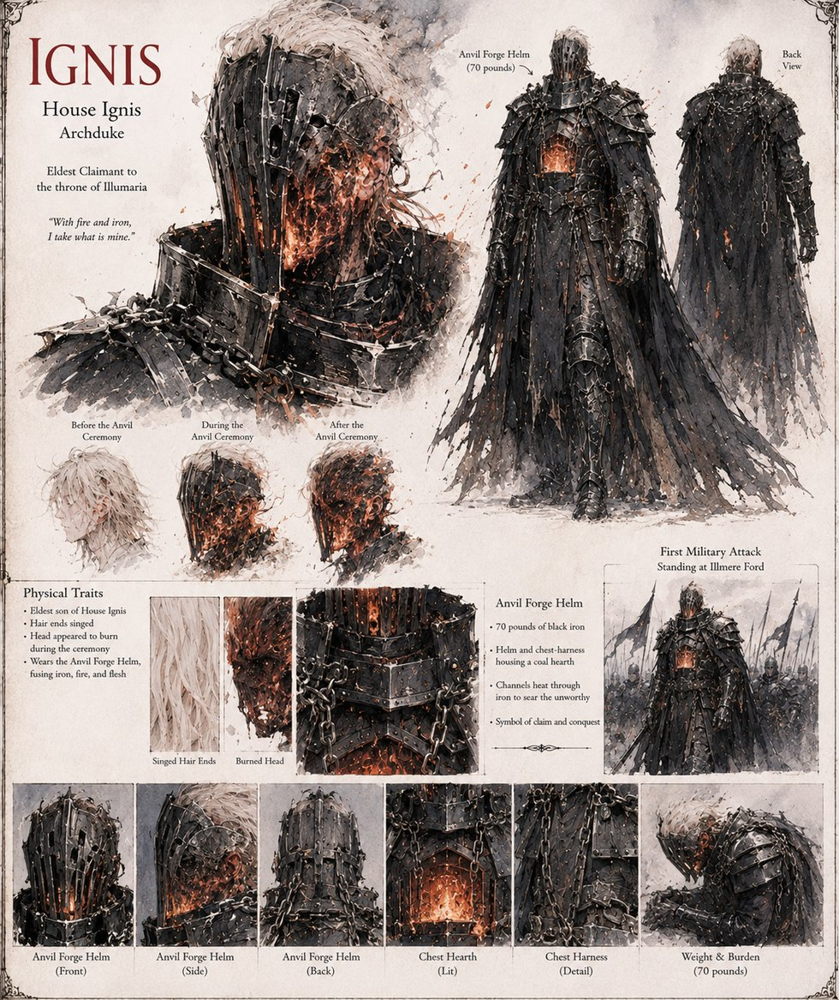

Ignis
Archduke Ignis, House Ignis · Eldest Claimant to the throne of Illumaria
Archduke Ignis takes the Great Judgment's dais first, as eldest claimant and loudest patron of the doctrine that grace must be forged rather than merely inherited: an Anvil Forge Helm of seventy pounds of black iron housing a coal hearth at its crown, pumped by two apprentice boys until the watching monks swear his whole head appears to burn. His own First Counselor, Farris, picks apart Blakk's letter of surrender clause by clause and convinces the war council it is a trap rather than a confession; Ignis strikes first at what his scouts wrongly call an enemy vanguard, and the Standing at Illmere Ford follows within the day.
No two surviving accounts agree on whether he fell in the fighting or rode east and kept riding. His nephew Ossian inherits a house reduced, over two decades, from first rank to an increasingly theoretical eighth — and is given back, unasked and in full, the very grazing rights his uncle lost, in the single act of mercy Ossian spends fifty-four years failing to forgive.
“With fire and iron, I take what is mine.”
Appears in The Vessel of Unmediated Grace